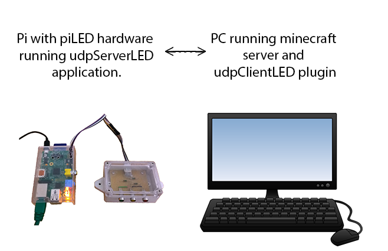
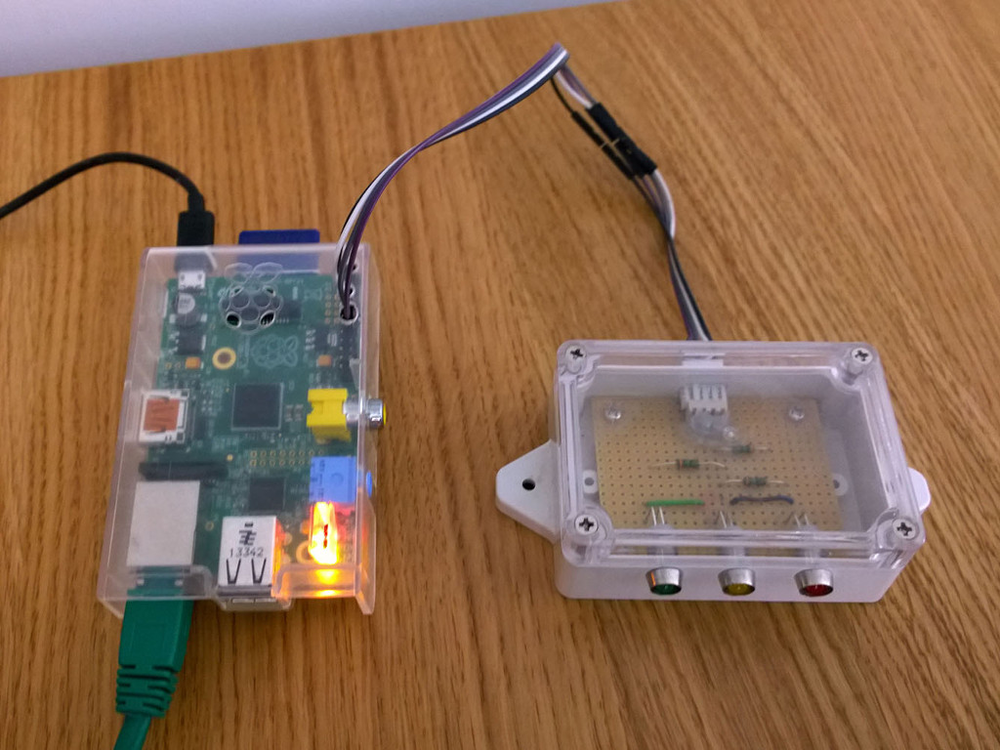
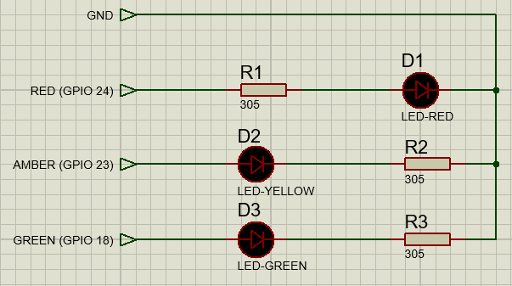
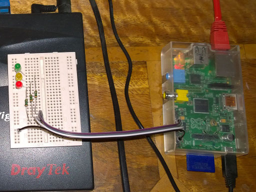
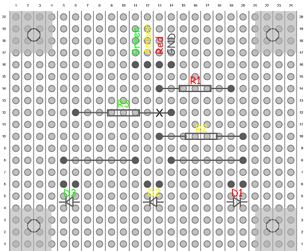
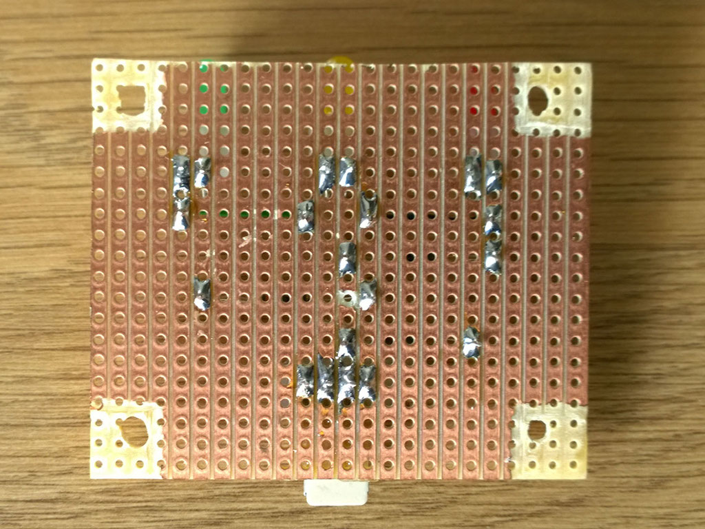
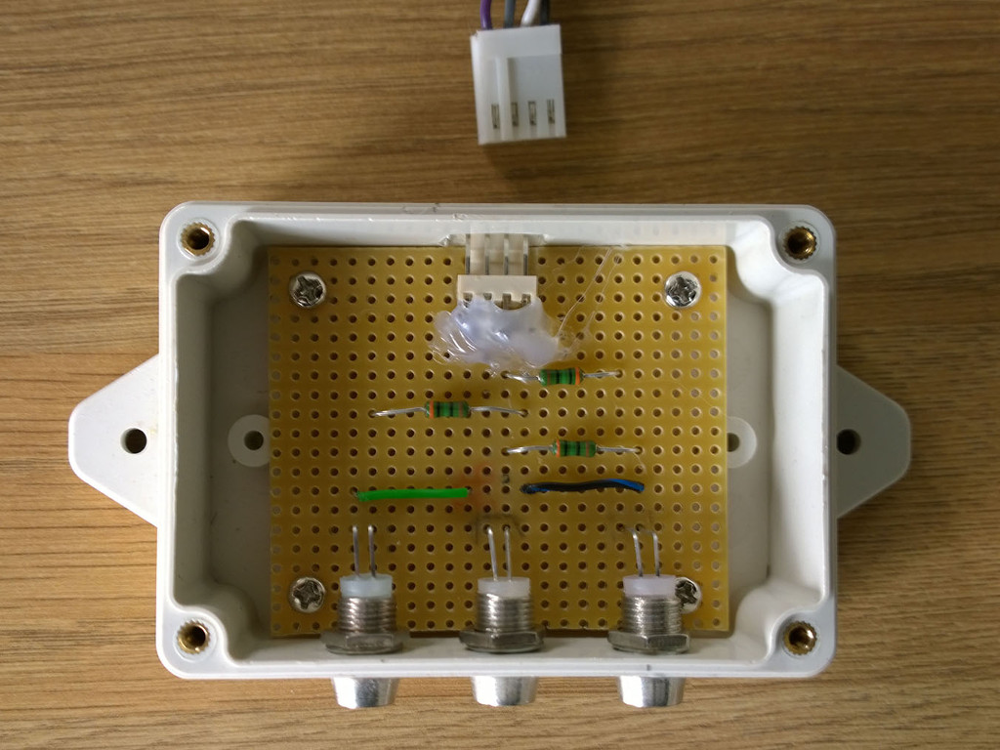
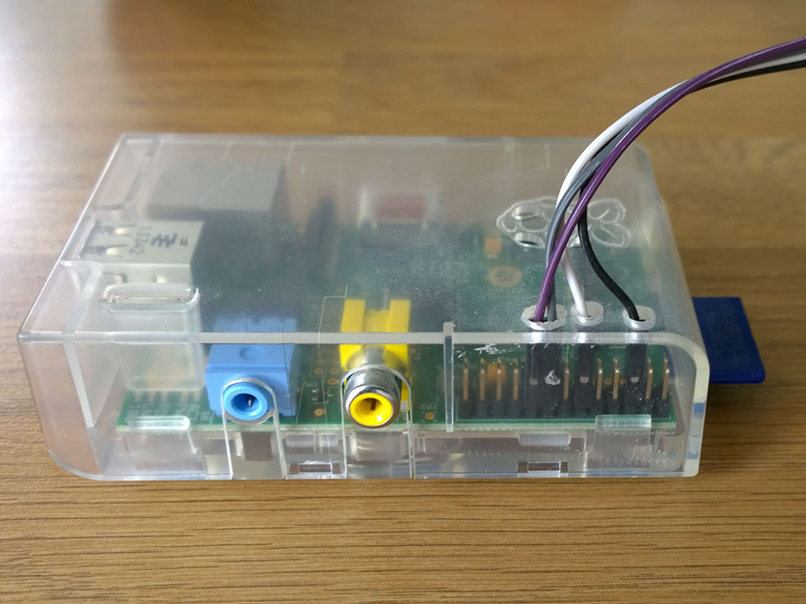

udpServerLED
A RaspberryPi based LED notification for minecraft servers (Java).
This programme works in conjunction with udpClientLED.
It is based on the original piLED plugin and runs identical hardware.
Overview
udpClientLED/udpServerLED is a traffic light based minecraft server notification system using a RaspberryPi. You will need a RaspberryPi which is connected to the physical hardware described in this guide in addition to an external minecraft server. If you are running the minecraft server on the same RaspberryPi then you need the original standalone piLED plugin form the link on the left.
System overview of both parts.
udpServerLED is a standalone java application that runs on a RaspberryPi. udpClientLED runs as a standard Minecraft plugin on your Minecraft server.
The rest of this guide refers to the server side running on the Raspberry Pi as shown below.

The LEDs indicate whether the server is running or not (red), if someone is logged in locally (amber) or if someone is logged in from outside the LAN (green). This has been tested on both Spigot and Glowstone implementations of the minecraft sever but should work on any other server type that accepts plugins.
How to use
If you are not interested in playing with the code then just download the latest .jar file from the releases link. After downloading, copy it to your RaspberryPi, follow the hardware guide below then run the command (in the case for the v0.4jar) shown below:-
java -jar udpServerLED-0.4.jar
Alternatively, save a text file containing the command above as LED.sh and execute using the following command. It will need to be made exectuable in order to do this.
./start.sh
If you want to play with the source code then download the whole project from the links on the left. It was built in Eclipse using the Maven framework.
Schematic and stripboard
The schematic is shown below. The only reason that R1 and D1 are in a different order is that made the stripboard planning easier

Next it's worth testing it on breadboard although this step is not essential. This was more to test the code than the circuit. Sorry for the messy photo but it's the only one I could find.

The stripboard plan is based on the size of board that would fit in the case so could easily be made smaller.

The top view shows the components and a wonderfully scrappy but functional bit of hot melt keeping the connector from moving.

The bottom shows why soldering was never my day job. Note the cut outs for the screws to prevent shorting and the cut track matching the X on the plan.

Case
I chose a case with a see through top as one of the purposes of this project (aside from fulfilling my penchant for fiddling with electronics and learning how to code again) is to show my children how stuff works. They're too young to start on electronics lessons so as long as they realise that there is physical stuff that needs to be put together (even if it is just 3 resistors and 3 LEDs) as oppose to just buying fully built things or downloading finished stuff then I'm happy.

If you want something more aesthetically pleasing then there are plenty of plain project boxes that would do the job and it may well be possible to squeeze the LEDs into an existing Pi case and avoid the need for any cables. Something like a piGlow could also work with adjustments to the code and avoid the necessaity for custom hardware. The final picture shows the connections into the pi itself. I've done it this way to avoid exposing the full I/O contacts to curious fingers

Authors and Contributors
I wrote this, it's my first proper code for well over twenty years (Excel macros notwithstanding) and probably the same for electronics that wasn't work related. Any sugestions for improvements to the code are welcome, contact me on GitHub. It's been fun perhaps with the exception of my woeful attempts to understand Git merges!